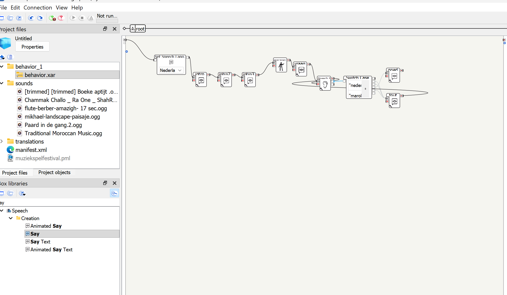
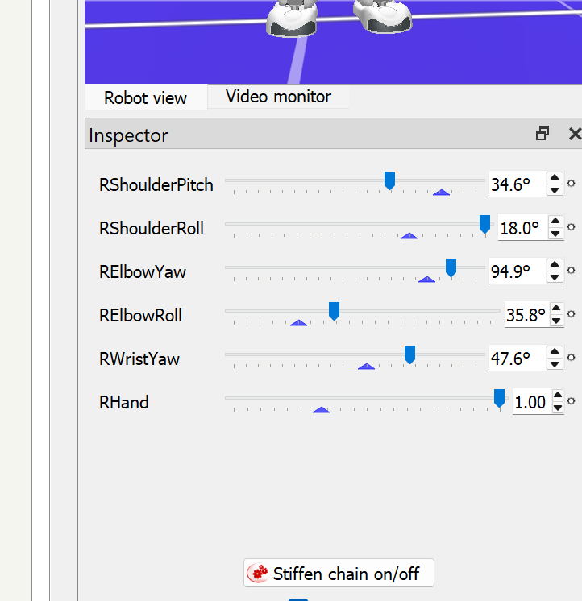
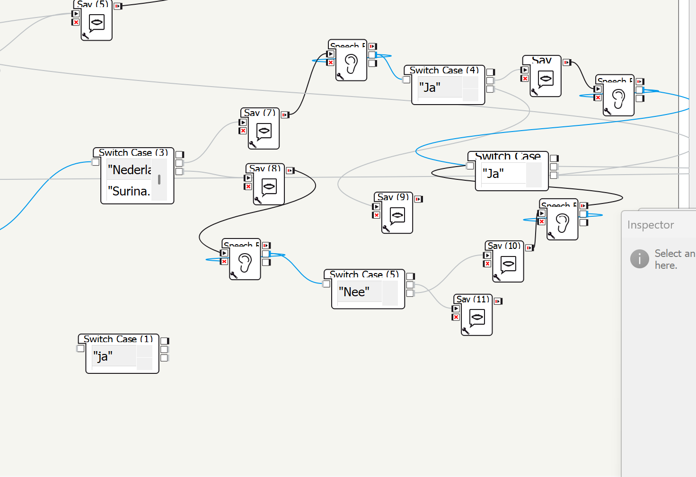
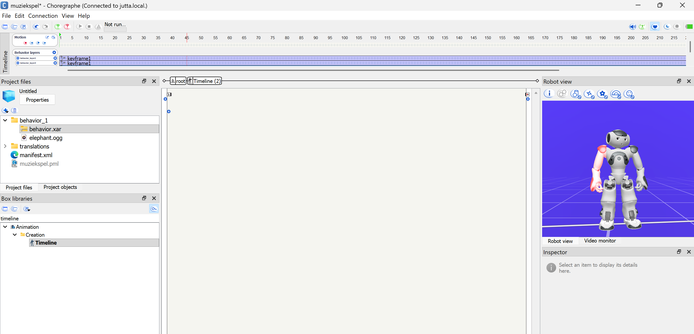

Social Robot project
Wat ik heb gebouwd semester 2 van leerjaar 2:
Schoolproject Semester 2, jaar 2
NAO Social Robot
Een interactief muziekspel met de NAO-robot voor het Diemense Robotfestival. De robot danst op muziek uit verschillende landen en de gebruiker raadt welk land erbij hoort. Aan het begin van dit semester had ik nog nul kennis over werken met de NAO. Ik heb zelf onderzoek moeten doen naar de werking daarvan. Ik heb gewerkt aan meerdere onderdelen dit semester. Namelijk onderzoeken gedaan naar de darkside van de robot en aan meerdere prototypes geholpen zoals, de dialoog gemaakt voor ghet vlaggenspel, Indiase dans, robot-emoties in Wick Editor gemaakt en een back-upplan.
Het project
waar gaat het precies over?
Doelgroep
Volwassenen bewoners van Diemen tussen 24 en 55 jaar van verschillende achtergronden. Het spel moest toegankelijk en laagdrempelig zijn.
Concept
De robot danst op een nummer ui een bepaald land. De gebruiker raadt welk land erbij hoort door een vlag te kiezen. Bij goed antwoord gaat het spel verder, bij fout antwoord krijg je een nieuwe kans.
Technologie
NAO-robot met het programma Choregraphe. We werkten met blokken, timelines, muziek, bewegingen, Speech Recognition en Switch Case logica.
Mijn bijdrage
Wat heb ik gedaan?
Sprint 1
Onderzoek: dark side van social robots
Ik heb onderzocht hoe softwarebugs gevaarlijk gedrag bij robots kunnen veroorzaken. Dit hielp mij nadenken over veiligheid en wat er allemaal kan gebeuren als een robot een onverwachte gedrag vertoont.
Sprint 2
Robot emoties in Wick Editor
Ik heb vijf emoties getekend en omgezet in animaties: blij, boos, verdrietig, verliefd en huilend. Deze prototype maakte de interactie van de robot leuker en toegankelijker.
Sprint 3
Choregraphe leren en team helpen
Ik heb Python en Choregraphe vergeleken en het team geadviseerd om verder te gaan met Choregraphe vanwege tijdtekort en omdat ik veel documentatie over het programma Choregraphe kon vinden. Daarna heb ik mijn teamgenoten uitgelegd hoe het programma werkt zodat we samen verder konden.
Sprint 4
Indiase dans en back-upplan
Ik heb de Indiase dans gebouwd in Choregraphe en de bewegingen gesynchroniseerd met muziek via de tijdlijn. Ook heb ik een back-upplan gemaakt met spraakherkenning en Switch Case omdat de NFC-chips niet werkten
Bewijs
Wat ik heb gemaakt

Back-upplan — spraakherkenning en Switch Case als alternatief voor de NFC-chips.

Eerste test in Choregraphe — ik onderzocht de gewrichten en graden van de virtuele NAO-robot.

Vlaggenspel test — op school testten we de interactie met de vlaggen en het spelconcept.

Virtuele robot testen — ik gebruikte de timeline om te begrijpen hoe bewegingen en keyframes werken.
Indiase dans — de NAO-robot danst op een Indiaas nummer gesynchroniseerd via de tijdlijn.
Knipperende ogen — de normale kijkstand van de robot, gemaakt in Wick Editor.
Boze emotie — een van de vijf animaties die ik heb gemaakt in Wick Editor.
Verdrietige emotie — de robot laat verdriet zien via zijn gezichtsuitdrukking.